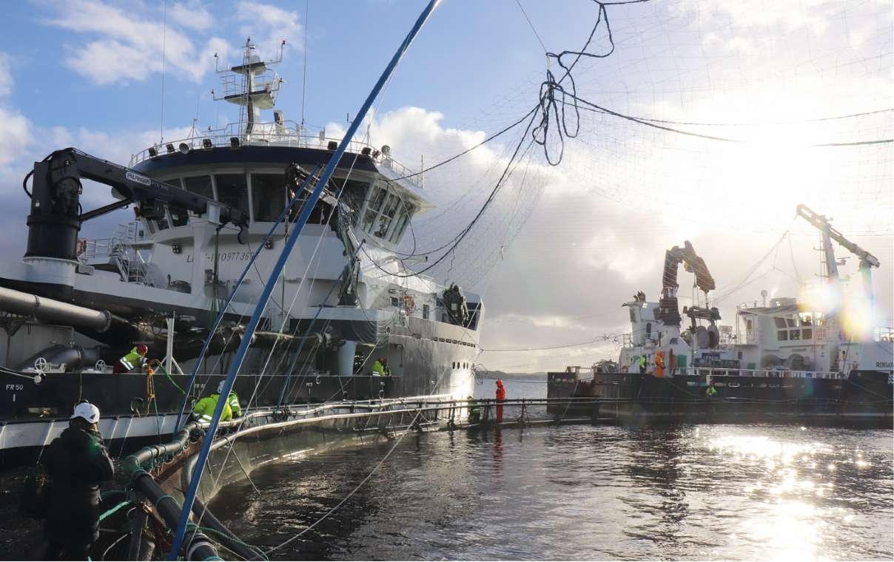
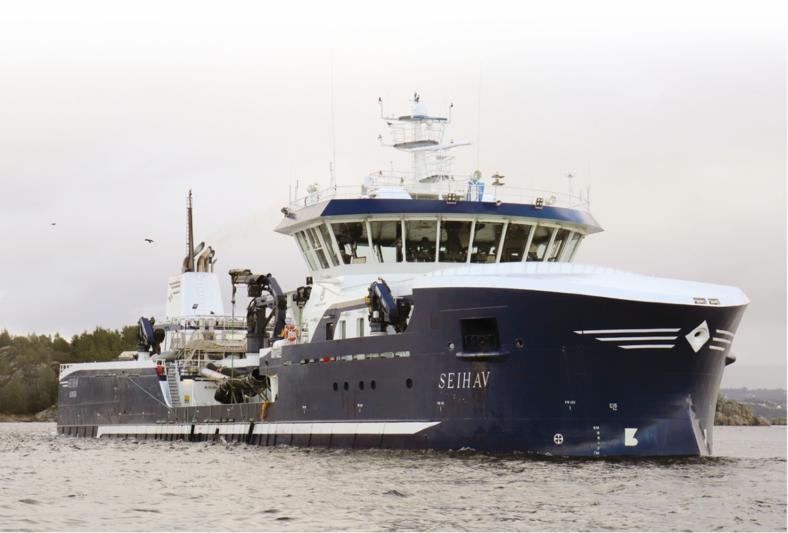
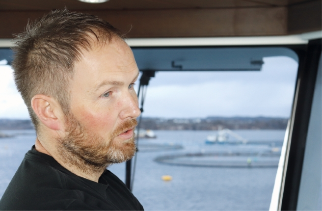

renset før det slippes tilbake i
miljøet, fritt for både lukt og
kjemikalier.
Våre erfaringer så langt er at sys-
temet fungerer, og at fisken blir fri
for lus over flere uker. Fisken
reagerer godt på behandlingen, men
utfordringen fra vårt perspektiv er å
kvitte seg med vannet etter hver be-
handling, da det gjerne tar 8– 10
timer å få vannet renset.
Men i fremtiden påpeker han
likevel at dette systemet og annen ny
teknologi kan være et godt bidrag til
brønnbåtene.
Brønnbåtnæringen er i front både
når det gjelder å ta i bruk og å bidra
til utvikling av teknologi. Næringen
er opptatt av å kunne gjennomføre
alle operasjoner så miljømessig bra
som mulig, samtidig som vi ivaretar
fiskevelferden, reduserer smitte-
risiko og leverer innen tjenester.
Breiere kompetanse og utvikling av
nye teknologiske løsninger gjør at vi
blir bedre og bedre. Dette er viktig
når det bli stadig mer oppdrettsfisk
de kommende årene, sier han.
Avanserte operasjoner
Seihav er nå på kontrakt til Lerøy
Seafood Group som eier 50 % av
Seistar, og det er viktig for Magnus å
holde lakseprodusenten fornøyd.
For at brønnbåten skal fungere op-
timalt er nøkkelen et godt sam-
arbeid. Når vi kommer til lokaliteten
er det gjerne et behov for en rekke
andre båter og at oppdretterne er til
stede, sier han.
En stor del av jobben til Gjerde er
derfor å holde i både informasjon- og
operasjonsflyten til fartøyet.
– Jeg må til enhver tid holde
mange mennesker informert om be-
vegelsene våre, og planlegger minst
to eller tre jobber på forhånd slik at
man får på plass folk og fartøy. Det
er mye organisering, påpeker han.
Høy aktivitet
Mannskapet på 9 jobber 12 timer i
døgnet. Magnus er 6 timer på/av.
– Behovet og etterspørselen i hav-
bruksnæringen gjør at båten
nærmest er i gang 24/7. Det er et
høyt press på at vi må være trygge,
gode og raske uansett operasjon.
Samtidig må vi følge de strenge
myndighetspålagte kravene som
brønnbåtnæringen har. Det er derfor
ingen dødtid om bord, sier han.
Skulle det bli rolige tider, har
Magnus god disiplin på gjennom-
føring av vedlikeholdsarbeid. I den
pålagte karantenetiden vaskes og
desinfisere brønner og utstyr grundig.
Hygiene, og at båten fungerer opti-
malt er av høyeste prioritet. Hvis noe
ikke fungerer gjør vi alt for å fikse
det
–
to ganger
–
før vi gir opp, sier
Magnus.
Skipperen påpeker videre at det er
svært sjelden at noe ikke fungerer,
slik at de ikke kan utføre bestilt arbeid.
Det som kan påvirke operasjonene er
dårlig vær, eller at andre oppgaver
enn det som var planlagt dukker opp.
Biologien gjør at man ikke alltid
kan planlegge sikkert hva som trengs,
og vi må omstille oss. På sjøen kan
en ikke kontrollere vær og vind, men
båten, og det vi gjør har vi full kontroll
på, summerer han.
Magnus Gjerde fra Austevoll har seilt på sjøen i 16 år. I dag er han skipper på brønnbåten
Seihav. Foto: Rob Fletcher.
Seihav ble overlevert til
Seistar i 2016. Båten
har kostet 350 mil-
lioner norske kroner,
inkludert påmontert
avlusningsutstyr.
Foto: Rob Fletcher.
